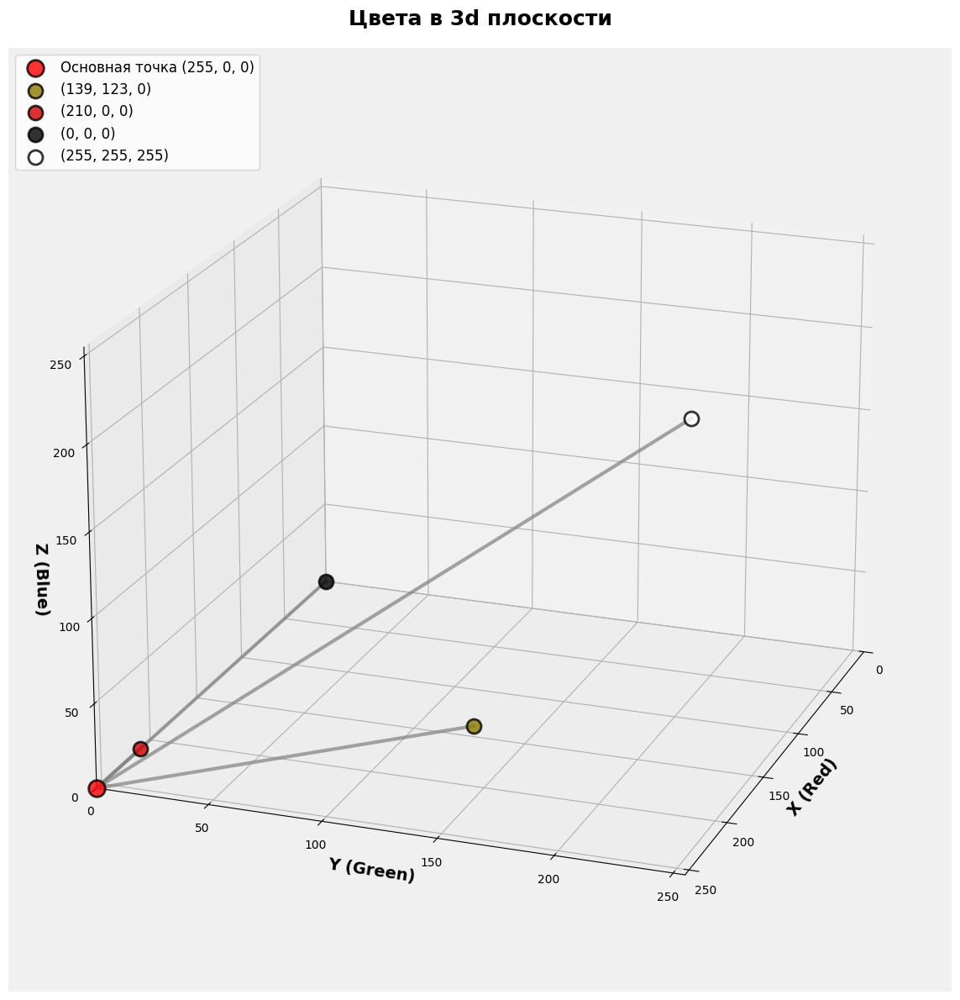
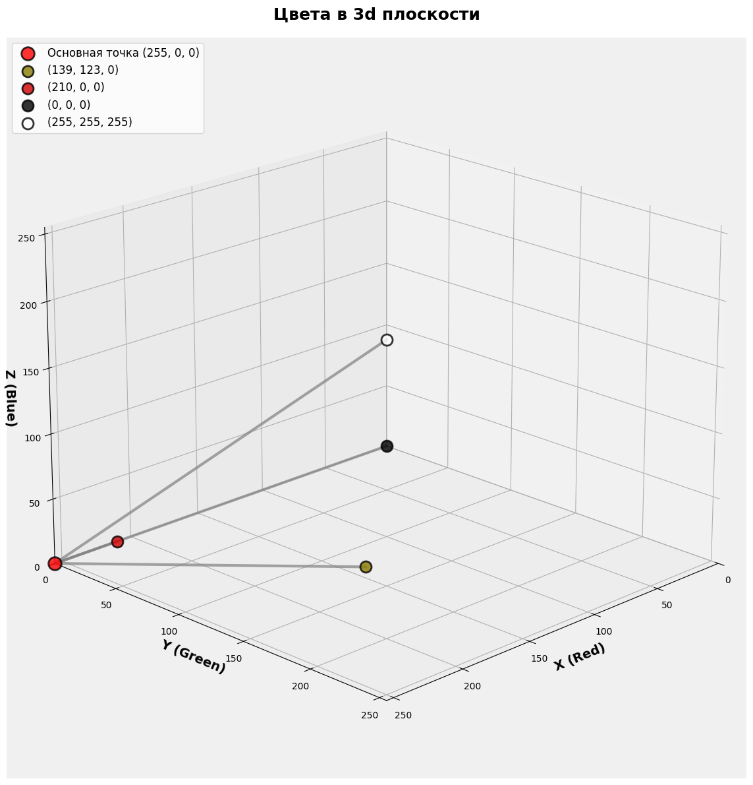
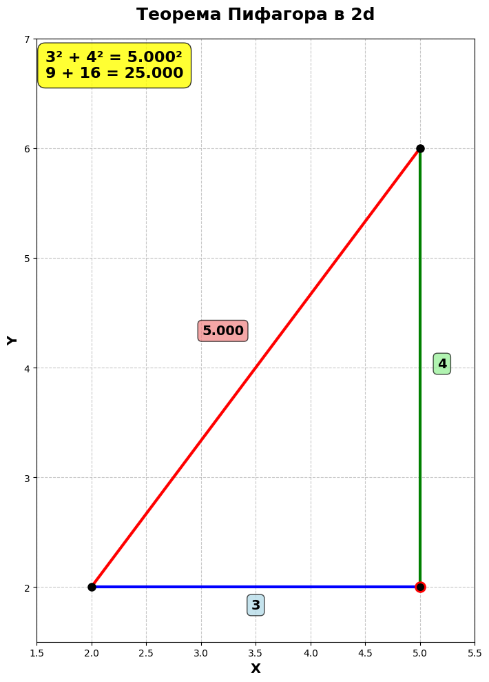
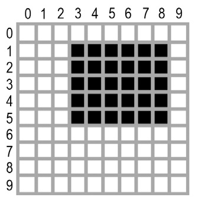

Урок 17. Представление цвета в компьютере и работа с изображениями в Python
Новый материал
Как компьютер представляет цвета?
Любой цвет в реальной жизни можно представить как комбинацию трех основных цветов:
- R (Red) - красный
- G (Green) - зеленый
- B (Blue) - синий
В компьютере цвет представлен тремя числами от 0 до 255, где каждое число обозначает интенсивность соответствующего цвета.
Примеры цветов в формате RGB:
(255, 0, 0)- ярко-красный(120, 0, 0)- темно-красный(0, 255, 0)- ярко-зеленый(0, 0, 0)- черный(255, 255, 255)- белый(255, 255, 0)- ярко-желтый(120, 120, 0)- темно-желтый
Почему для каждого цвета используется именно диапазон от 0 до 255?
Как сравнивать цвета?
Постановка задачи
У нас есть цвет (255, 0, 0) - ярко-красный. Нужно определить, какой из этих цветов ближе к нему:
(139, 123, 0)(210, 0, 0)(0, 0, 0)(255, 255, 255)
Геометрический подход
А давайте представим цвет в виде точки в 3-х мерном пространстве?


Визуально видим, что ближе всего (210, 0, 0)
Почему геометрическая интерпретация помогает сравнивать цвета?
Алгебраический подход
Но как рассчитать расстояние от одной точки до другой в виде числа?
Теорема Пифагора для 2-х координат
Пусть у нас есть точки (2, 2) и (5, 6)
Какое между ними будет расстояние?

То есть формула будет такой
\(\sqrt{(x_2 - x_1)^2 + (y_2 - y_1)^2}\)
Или же с нашими координатами
\(\sqrt{(5 - 2)^2 + (6 - 2)^2}\)
То есть считая:
- \((x_2 - x_1)\) вычисляем длину прямой по оси X
- \((y_2 - y_1)\) по оси y
- \(\sqrt{(x_2 - x_1)^2 + (y_2 - y_1)^2}\) - теорема Пифагор для треугольника по XY
Теорема Пифагора для 3-х координат
Чтобы получить теорему Пифагора для 3-х координат просто добавим квадрат разности z под корень.
\(\sqrt{(x_2 - x_1)^2 + (y_2 - y_1)^2 + (z_2 - z_1)^2}\)
Например, у нас есть точки (0, 0, 0) и (2, 3, 4) Тогда расстояние между ними будет:
\(\sqrt{(2 - 0)^2 + (3 - 0)^2 + (4 - 0)^2} = \sqrt{4 + 9 + 16} = \sqrt{29}\)
Вернемся к цветам
Чтобы понять, какой цвет ближе, нужно найти наименьшее расстояние между цветами в RGB-пространстве.
то есть посчитать:
\(\sqrt{(R_2 - R_1)^2 + (G_2 - G_1)^2 + (B_2 - B_1)^2}\)
где \(R_2\), \(R_1\) и т.д. - значения цветов точек в канале RGB
Как бы вы вычислили расстояние между цветами (255, 10, 5) и (210, 0, 0)?
Как подсчет расстояния между цветами поможет нам сделать pixel art?
Как получить цвет блока в minecraft?
У экземпляра класса Block есть метод getRGBA:
Выводится 4 числа. 4-е это прозрачность, оно нас не интересует. Первые 3 это как раз RGB.
Как работать с пикселями в питоне?
Для этого нам пригодятся 2 пакета:
- PIL - для чтения изображений
- numpy - для преобразования изображения в список numpy
Для начала установим библиотеки при помощи
Куда устанавливать?
Так как minecraft использует python без виртуального окружения, то надо будет выполнить команду в командной строке windows, а не pycharm. Иначе minecraft не увидит установленные пакет
Теперь получим изображение в python:
from PIL import Image
import numpy as np
# Получаем экземпляр класса Image из изображения
img = Image.open('pythagor.png').convert('RGB')
# Преобразуем в массив numpy, чтобы получить значение каждого пикселя
img_list = np.array(img)
# Выводим размерность изображения.
print(img_list.shape)
# Выводится что-то вроде (1000, 1400, 3), где
# - 1000 - кол-во пикселей в высоту
# - 1400 - кол-во пикселей в ширину
# - 3 кол-во цветовых каналов. В нашем случае RGB
Теперь, когда у нас есть список с пикселями попробуем их получить. На изображении ниже показано, что координаты пикселей отсчитывают от левого верхнего угла изображения

print(img_list[0, 0]) # значение левого верхнего пикселя
print(img_list[0, 1]) # значение пикселя правее предыдущего
А как теперь получить значение каждого канала цвета?
print(f'Интенсивность красного верхнего левого пикселя: {img_list[0, 0, 0]}')
print(f'Интенсивность зеленого верхнего левого пикселя: {img_list[0, 0, 1]}')
print(f'Интенсивность синего верхнего левого пикселя: {img_list[0, 0, 2]}')
Этих знаний будет достаточно, чтобы получить информацию о цвете пикселя
Итог
Теперь мы можем:
- получить цвет пикселя изображения
- получить цвет блока в minecra****ft
- посчитать расстоянием от цвета блока до цвета пикселя. Чем оно меньше, тем больше похожи цвета
Домашнее задание
- Напишите функцию, которая на вход получает 2 списка со значениями RGB и возвращает расстояние между ними
- Напишите функцию, которая на вход получает цвет пикселя RGB списком и возвращает блок, который больше всего подходит. Выбор происходит из разных цветов блока керамики. В этой функции используйте функцию расстояния
- Напишите функцию, которая на вход получает numpy список с пикселями изображения и рисует пиксель арт этого изображения из блоков.
Получение размеров изображения: